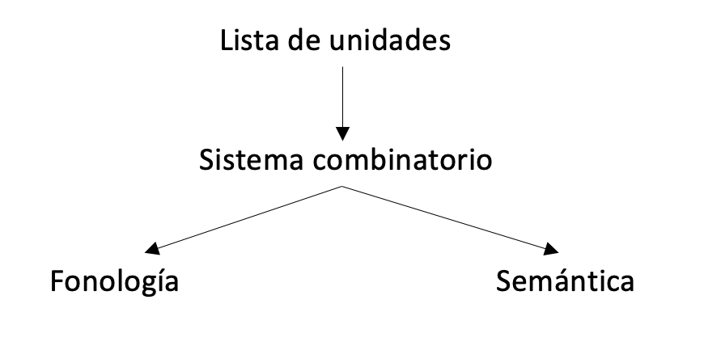

Presentación
Introducción a la morfología
¿qué es la morfología?
- Una introducción a la morfología
Un morfólogo estudia la forma en que los hablantes construyen e interpretan las palabras de su lengua.
La morfología investiga las propiedades de las palabras, especialmente:
- La información gramatical que contienen las palabras y
- La forma de relacionarse unas con otras por su forma y significado
La morfología
- Algunos pronombres de objeto
| 1a persona | 2a persona | |
| Singular | me | te |
| Plural | nos | os |
La morfología
- El sufijo -dor
| Verbo | Sustantivo |
| trabajar | trabajador |
| gobernar | gobernador |
| afilar | afilador |
| comprar | comprador |
- El morfólogo también se pregunta por qué no *visitador vs. visitante; y qué pasa con leñador, que no contiene verbo.
La morfología
- Morfológicamente simple: Una palabra que no puede dividirse en unidades menores de significado
- me, te, nos, os
- Morfológicamente compleja: Una palabra que puede dividirse en unidades menores de significado.
- afilador: afila + dor
Los morfemas
- Los morfemas: Una unidad mínima con significado; unidades gramaticales mínimas
- estudiante: estudia + nte
- sordera: sord + era
- exactitud: exact + itud
Las partes
Base: La forma más simple sobre la que se forma la otra palabra
Morfo: Los segmentos fonémicos de los morfemas, i.e. su forma pronunciada.
- Cuando un morfema está representado por más de un morfo, el morfema tiene alomorfos (o más de un exponente).
- casa-s vs. león-es → -s/-es (plural)
- imposible vs. indomable → [im] vs. [in] (prefijo negativo)
La morfología vs. la fonología, la semántica y la sintaxis
La fonología
- La fonología: Investiga los sonidos y cómo se combinan entre sí.
- dedo
- lago vs. gato
- trabajador
- afilador
La morfofonología: El estudio del interfaz entre la fonología y la morfología; la aplicación de la fonología al estudio de la palabra.
La semántica
- La semántica: Investiga el significado de las unidades y sus combinaciones.
- gobernar
- gobernador
- naranja
- naranjo
La semántica léxica: El estudio del interfaz entre la semántica y la morfología; la aplicación de la semántica al estudio de la palabra.
La sintaxis
- La sintaxis: Investiga las oraciones y como las partes de las oraciones se combinan para formar oraciones.
- El gobernador salió en la tele.
- La morfosintaxis: El estudio del interfaz entre la sintaxis y la morfología; la aplicación de la sintaxis al estudio de la palabra
- gobernador → goberna + dor
La morfología y el léxico
El léxico
- El lenguaje es un sistema que nos permite combinar unidades simples para formar elementos complejos que se materializan mediate sonidos (o gestos) y que contienen un significado determinado.
(11)

El léxico
El léxico: La lista de unidades que cada lengua tiene para combinar; es una lista arbitraría que asocia una secuencia de sonidos conjuntos de información gramatical y semántica. Es esencialmente lo que se recoge en los diccionarios.
Por ejemplo: la lista especifica que el objeto esférico en el cielo que refleja la luz del sol se pronuncia /luna/ en español.
La arbitrariedad: De una lengua a otro el léxico varía: /mun/ en inglés, /tal/ en coreano, /fengari/ en griego.
El léxico
| Procedimiento léxico | vs | Pocedimiento morfológico |
|---|---|---|
| caballo - yegua | doctor - doctora | |
| hombre - mujer | niño - niña |
- Cómo se vería esto en el modelo?
Clases de morfemas: flexión, derivación y composición
Flexión, derivación y composición
La palabra trabajador consiste en un LEXEMA (trabaja) y un AFIJO (-dor).
¿Qué es un lexema?
- Para entender, es útil pensar sobre la noción palabra.
Lexema
- Yo encuentro problemas graves.
- Tu encuentras problemas graves.
- Encontré problemas graves.
- Encontraste problemas graves.
Una noción de palabra: En (12) hay 4 palabras subrayadas. Se distinguen por sus fonemas (sonidos distintos) y/o por las letras distintas. En este sentido se refieren a las formas distintas.
Otra noción de palabra: En (12) hay una palabra abstracta que puede realizarse/manifestarse en varias formas. Diríamos que en (12) el verbo es el mismo en cada oración: encontrar.
NB: En un diccionario, solo encontrarás encontrar
Lexema
- Lexema (definición informal): la palabra abstracta que subyace sus posibles formas (flexivas); tiene categoría léxica.
- naranja
- naranjo
Lexema vs afijo
- ¿Cómo se difieren los lexemas de los afijos?
- Dos propiedades formales:
- Posicionamiento
- Posibles combinaciones:
Posicionamiento
Lexema: Tiene más libertad de posicionamiento: dentro de la palabra, a la izquierda o a la derecha.
Afijo: Siempre ocupa una posición fija
- organiza-dor
- co-organiza
- corre-dor → *dor-corre
- co-habita → *habit-co
Posibles combinaciones
Lexema: Puede formar una palabra sin necesidad de otros elementos. Es decir, puede formar la base con la que se combina otro lexema para formar una pablara nueva.
Afijo: No puede ser base con la que combina otro afijo.
- para-sol
- hombre-rana
- *co-dor
- *pre-ista
Lexema + Afijo
La combinación de un lexema y un afijo puede ser el resultado de la derivación o de la flexión
La derivación: Con la adición de un afijo, hay un cambio de categoría de la base y/o un cambio sustancial en el significado (léxico).
La flexión: Con la adición de un afijo, no hay cambio de categoría de la base y no hay cambio sustancial en el significado, aunque puede haber cambio de significado gramatical.
Lexema + Afijo
- gota → gotear
- amar → amable
- crear → creación
- naranja → naranjo
- manzana → manzanar
- gota → gotear
- corre → corría
- mesa → mesas
- largo → larguísimo
Lexema + lexema
- La composición: La combinación de dos (o más) lexemas.
- abrebotellas
- nochevieja
- hombre lobo
La flexión vs. la derivación
- Cuatro propiedades que distinguen la flexión de la derivación
La derivación forma palabras (lexemas) nuevos: estudiar → estudiante.
La flexión no; crea formas de una palabra/lexema existente: copa → copasLa flexión es PRODUCTIVA: se aplica (con raras excepciones) a todas las formas que pertenece a una misma categoría gramatical - forma imperfectiva de los verbos.
- La derivación tiene excepciones arbitrarias - afijo -dor
* estudiador, * visitador, (*)comedor
- La derivación tiene excepciones arbitrarias - afijo -dor
La flexión vs. la derivación
La flexión es sensible al contexto gramatical, e.g. la concordancia.
- Las frutas sanas.
La derivación no es sensible al contexto gramatical.
- Las discusiones sanas/ *sansiones
Los afijos flexivos aparecen en los extremos de una palabra.
Los afijos derivativos aparecen en una capa más interna a los afijos flexivos.
- trabajadores/*trabajaesdor
- humedecer → humedecía/*humedíaece
Nuevas palabras
La formación de una palabra (=lexema) nuevo
Convencionalmente, una palabra se considera distinta a otra si se difieren en una de cuatro nociones:
- la categoría léxica: nación → nacional
- la estructura argumental: ojo → ojear
- la estructura aspectual: conocer → reconocer
- los rasgos característicos/semánticos: libro → libreta
La estructura
- Hay estructura jerárquica dentro de la palabra, tal como hay en la sintaxis.
- rebuscamiento
- re-busc-a-miento-s
- [[[re-[[busc-]-a]]-miento]-s]
La estructura
- Tocaron al oso con una rama. → una oración: dos significados
- inutilizable → una palabra: dos significados
- Tocaron al oso con una rama. → una oración: dos significados